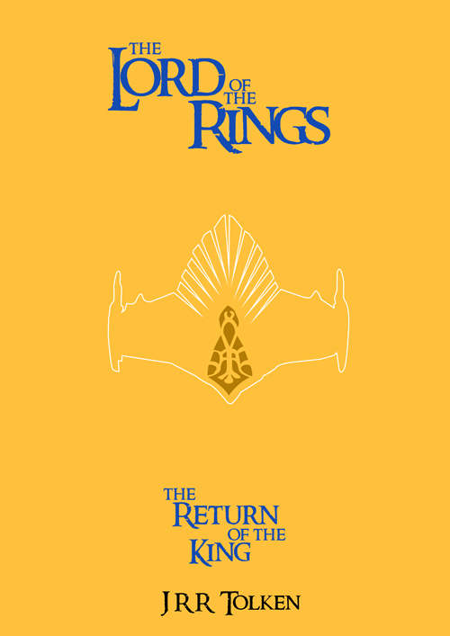

So this is the final version of The Fellowship Of The Ring and I am liking it a lot. As you can see the layout has more and less stayed the same from the sketch's with them just being laid out a bit better. I want with a cream background as I wanted to go with something that just looked nice and for me cream gives of a good vibe. I then made a contrast with the Red text, the reason for this was so that it stood out more. With the circle I went with just a goldish line as I like how simple it is, it doesn't stand out to much but still stands out. Over all I am very happy with the out come of this cover and wouldn't change a thing.

Then with this being the final version of The Two Towers I still like it the best. You can finally see what I mean about the line creating the towers and for me I think this look nice. For this I decided to go out there with the colours and went with a turquoise greeny colour. Then the text in a pinkish colour which I think goes well with the background colour. For the lines I change them a bit by making the main one white and I then added a smaller black one so this sort of is like a shadow. I think this work very well and is very eye catching.

Now on to the last cover The Return Of The King and with this one it is in drawing at second place with the first cover. As you can see I went with a weird colour scheme again and I like as everything stands out in the way its meant to. The background is a orangey colour which I like but the more I look is becomes a bit over powering. But any ways the text is a dark blue colour that goes very well with the background of the book. With that the illustration is the main thing that has changes and this one was the hardest to do. I shall say it here that I used the pen tool on both this one and the second cover for illustrations. This one took a while as it kept going funny but eventually it went my way and I got it done. I wasn't going to add in the centre part but as I was going for a minimalist look but I said screw it and done it any ways. I think this part helps this cover out by adding another colour to the mix and just something else you eye have to take in.
